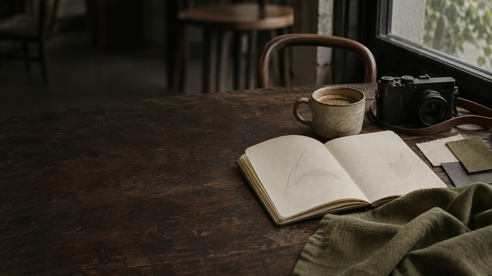
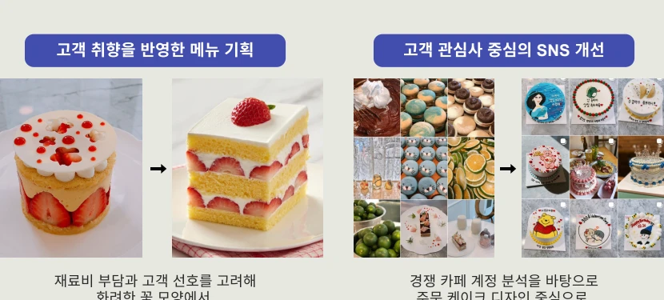
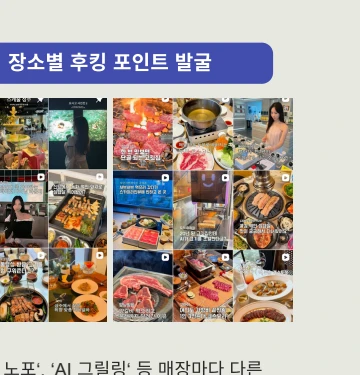
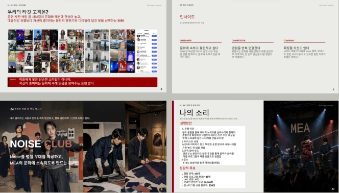
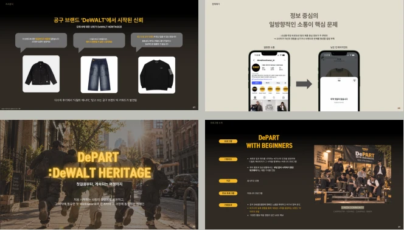

직접 검증하는 문제 해결
냉동 디저트의 식감에 대한 피드백을 확인하고 해동 정도를 테스트해 판매 기준을 개선했습니다.

카페에서 시작하는 기획의 순간 · AI 콘셉트 이미지소개
고객이 남긴 리뷰 한 줄, 매장마다 다른 매력, 참여하고 싶은 이유. 작은 반응을 관찰하고 직접 검증하며 기획의 실마리를 찾습니다.
카페 운영부터 맛집 콘텐츠 기획·촬영·제작까지 경험했습니다. 패션 브랜드 마케팅 실무과정에서는 고객 분석을 바탕으로 캠페인 메시지와 참여 경험을 설계했습니다.
냉동 디저트의 식감에 대한 피드백을 확인하고 해동 정도를 테스트해 판매 기준을 개선했습니다.
매장별 특징을 후킹 문구와 릴스로 구체화하고, 브랜드의 요청과 일정에 맞춰 콘텐츠를 제작했습니다.
브랜드 철학을 전달하는 인터뷰 콘텐츠와 UGC, 공연과 커뮤니티를 연결하는 캠페인을 제안했습니다.
프로젝트
운영 경험과 캠페인 제안을 함께 담았습니다.

고객 취향을 메뉴에 반영하고, 콘텐츠와 제품 제공 방식을 개선한 경험.
재료비 부담과 고객 선호를 고려해 꽃 모양 중심의 디저트를 자연스러운 디자인으로 재구성했습니다.
경쟁 카페 계정 분석 후 주문 케이크 디자인 중심으로 콘텐츠를 재편하고 톤앤매너를 통일했습니다. 포트폴리오에는 한 달간 팔로워 80명 증가로 기재되어 있습니다.
냉동 디저트 식감 불만을 계기로 해동 정도를 테스트했습니다. 이후 남기는 양이 줄었고, 근무 기간 중 확인한 리뷰에서 동일 불만이 재발하지 않았습니다.
출처: 이력서 핵심 역량 / 포트폴리오 4쪽. 매출·팔로워 수치의 산정 원자료는 별도 확인 필요.장소의 매력을
콘텐츠로.

서울의 가볼 만한 장소를 소개하는 로컬 큐레이션 계정, @hyepick_place.
‘30년 노포’, ‘AI 그릴링’ 등 장소의 차별점을 찾아 릴스 주제로 기획하고, 매력과 이용 정보를 함께 소개했습니다.
브랜드별 요청 사항과 일정에 맞춰 콘텐츠를 기획·제작했습니다. 약 2년간 주 평균 2회 이상 맛집 콘텐츠를 업로드했습니다.
출처: 이력서 핵심 역량 / 포트폴리오 5쪽. 팔로워 1.3만은 자료 작성 시점의 수치이며 현재 수치는 확인하지 않았습니다.
발견에서 참여로, 참여에서 관계로. 아티스트 협업을 지속적인 문화 프로그램으로 확장하는 캠페인 제안.
자사·고객·경쟁사 분석 및 핵심 문제 도출, NOISE CLUB 콘셉트와 메시지 설계, 공연 전·당일·후 IMC 전략 및 시즌 확장안을 기획했습니다.
공연, 후속 콘텐츠, 고객 참여 프로그램을 연결해 MEA와 취향을 공유하는 사람들이 관계를 이어갈 커뮤니티를 제안했습니다.
현장 관객 185명 / UGC 70건 / 도달 18,000회 / 신규 팔로워 350명. 반복 참여 기반 마련을 목표로 설정했습니다.
출처: 이력서 교육·핵심 역량 / 포트폴리오 6쪽. 실행 여부 및 실제 성과는 제공 자료에서 확인되지 않습니다.
새로운 취미와 일을 시작하는 2030 입문자를 위한 첫 워크웨어 브랜드로 인식을 확장하는 제안.
자사 분석과 소비자 후기·커뮤니티 반응 조사, 비기너 캠페인 콘셉트·메시지 설계, 단계별 KPI를 담당했습니다. 직원 인터뷰를 통한 브랜드 스토리 콘텐츠와 UGC 참여 동기도 구체화했습니다.
팝업·커뮤니티·UGC로 품질과 실용성을 직접 경험하는 흐름을 제안했습니다. 팀원들과 소통하고 피드백을 반영해 기획안을 개선했습니다.
워크맨·매거진·인플루언서·팝업 연계를 통한 자사몰 방문자 1만 명 확보 목표. 워크맨 예상 조회수 200만 회를 기준으로 한 제안입니다.
출처: 이력서 핵심 역량 / 포트폴리오 7쪽. 팀 전체 성과와 개인 기여를 구분했으며, 실제 집행 성과를 의미하지 않습니다.현장 경험
운영의 기본과 고객을 이해하는 태도를 배웠습니다.
(주)그린파트너즈 · 파티쉐 사원
디저트 제조, 재고 관리와 원부자재 발주, 레시피 개선 및 시제품 제작. 매달 제품 테스트와 제조공정 직원 교육을 진행했습니다.
대표 · 카페 운영
매장 운영, 디저트 제조, 고객 피드백 관리, 인스타그램 운영 및 레시피 개발. 팬데믹 시기에는 식사를 겸할 수 있는 메뉴를 개발·적용했습니다.
(주)동승 · 파티쉐
디저트 제조, 고객 응대, 재고 관리 및 발주. 고객 반응을 관찰하고 서비스팀과 협업해 요구사항을 반영했습니다.
배움의 기록
패션 브랜드 마케팅 실무과정 수료. 브랜드 포지셔닝·스토리텔링, 고객 구매 여정, SNS 콘텐츠 기획, 디지털 광고 성과 지표를 학습하고 MEA 개인·DeWALT 팀 기획안을 제작·발표했습니다.
제과·제빵 이론과 제조를 학습하고, 디자인 케이크 대회 준비·참가 및 학생회 활동을 경험했습니다.
자격 | 제과 기능사 · 제빵 기능사 · 초콜릿 마스터 · 케이크디자이너 · 운전면허 2종 보통
함께할 다음 이야기
고객의 반응을 읽고, 기획을 실행으로 연결하겠습니다.
Instagram에서 제가 발견한 장소와 콘텐츠를 만나보세요.
@hyepick_place Instagram, 새 탭에서 열기